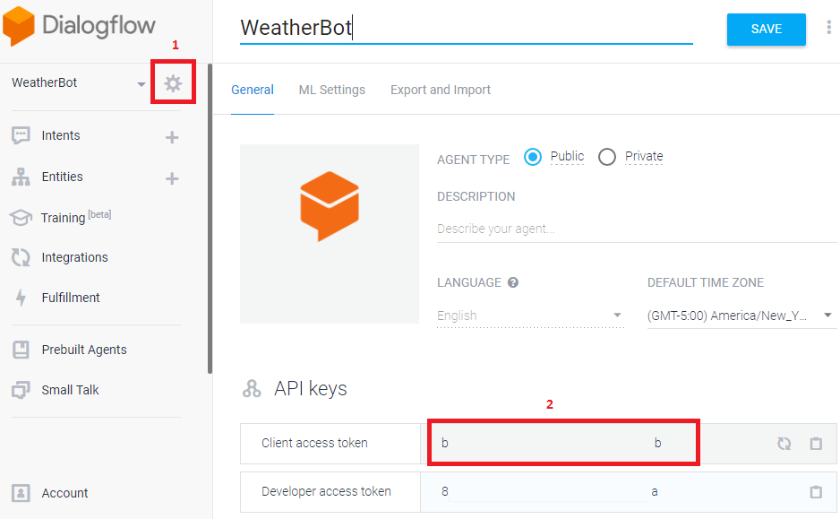
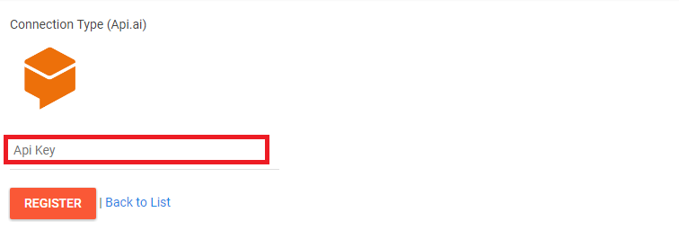
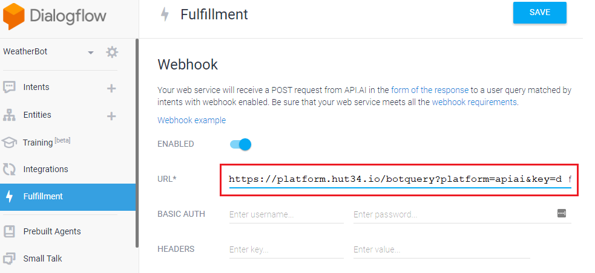
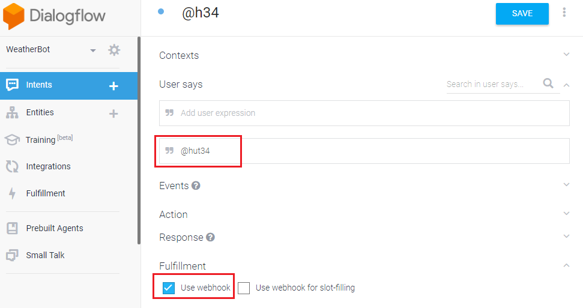
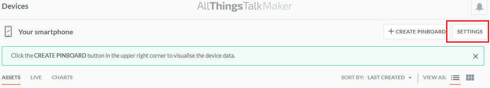
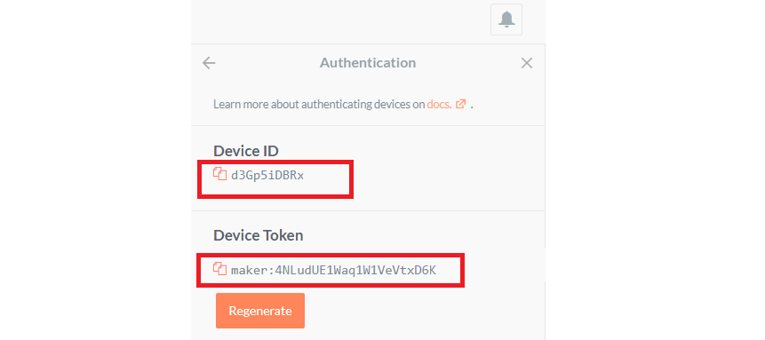
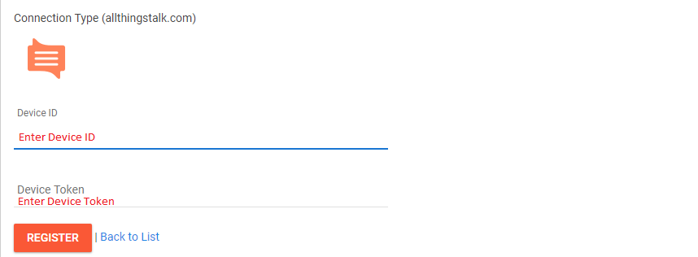
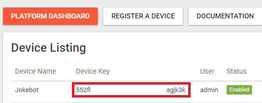

Getting Started
Overview
This page will help you walk through the most important features of the Hut34 Project and show you how to connect your device using generic webhook, AllThingsTalk, Dialogflow and MS Bot framework.
Create account
This page describes how to create and log in to the Hut34 Platform.
Sign up and Log in
First, you will have to sign up to the beta platform here. Follow the instructions and you should receive an email once your account has been approved. It might take up to two business days. Once it is done, log in on this page.
Register your first device
Once you are logged in, it will direct you to the platform dashboard where you can find all your devices and bot statistics.
To get started, click on the "register a device" option at the top of the page or click here. You will have to fill out different details:
- Device Name (e.g Bob's phone)
- Invocation
- Fee (in Bash) - this is the price user will pay to access your data or service
- Location
- Meta Tags
- Connection Type - generic webhook, AllThingsTalk, Dialogflow and MS Bot framework
Further documentation about connection types can be found on the next section.
Connection Types
Dialogflow Integration
Requirements
Before proceeding, you will need:
- A Hut34 account
- A Dialogflow account
- Be familiar with Dialogflow
Get started with Dialogflow here.
1. Obtain a Dialogflow agent client access token
- Login to your Dialogflow account and select the agent that you want to integrate with Hut34.
- Go to your agent settings and copy "Client access token". This token will be used in the next step.

2. Register a new device in Hut34
- Now login to your Hut34 account. Click "Register a Device" link at the top of the page.
- Complete device information. Now select "Dialogflow" under "Connection Types".
- Paste the "Client access token" copied from step 1 to the "API key" textbox.

- Press the "Register" button. You will now be redirected to the "Device List" page and you should now see your device in this list. Now copy your "Device key" from this list. This will be used in the next step.

3. Configure the Dialogflow webhook
- In your Dialogflow account select the agent that you want to integrate with the hut34 platform, and click on the "Fulfillment" link.
- Enable webhook and enter the webhook url by inserting your Device Key in the following url:
https://platform.hut34.io/botquery?platform=apiai&key=[YOUR_DEVICE_KEY]

4. Create Receiving Intent
- Create a new Intent in your agent and set "@hut34" in the "User Says" field.
- Under Fulfillment section enable the "Use Webhook" option.

AllThingsTalk Integration
The Hut34 Platform supports Allthingstalk integration. You can integrate an Allthingstalk (ATT) device by following these steps.
Requirements
- A Hut34 account
- A AllThingsTalk account
1. Obtain AllThingsTalk Device ID and Device Token
- Login to AllThingsTalk account and select the device you wish to connect to Hut34
- Click on settings

- From the settings side bar, select authentification. Keep this tab open.

2. Register a new device of Hut34 Platorm
- From your Hut34 account. Click "Register a Device" link at the top of the page.
- Complete device information and select "AllThingsTalk" under "Connection Type".
- Copy and paste the Device ID and Device Token from ATT that you found during step 1.

3. How it works
- Even though device data may be streamed continuously to ATT, Hut34 will only retrieve data upon request.
- When your data is requested, Hut34 will make an API request to ATT retrieve your device’s state.
- The response JSON from ATT will be parsed and returned to the requester.
Microsoft Bot Framework Integration
You can integrate your Microsoft Bot framework bot with Hut34 by following these steps.
1. Register a new device in Hut34
- Login to your Hut34 account. Click "Register a Device" link at the top of the page.
- Enter device information ("device name", "invocation" and "entropy fee" per transaction). Now select "MS Bot Framework" under "Connection Type".
- Enter your bot's webhook url.
- Press "Register" button. Your will be redirected to Device List page. Now copy your device key. This will be used in next step.

2. Send a question to Hut34 and get a response
Sending your question to Hut34 and getting response is simple. To send your question you need to post json to your Hut34. You can use following Payload class.
To send your question, use this code:
public class Payload {
public string message { get; set; }
}
You will need to post your json to following url by replacing [DEVICE_KEY] with the key that you get from previous step.
https://platform.hut34.io/botquery?platform=msft&key=[DEVICE_KEY]
Here is the the complete code in C#:
var client = new WebClient();
client.Headers[HttpRequestHeader.ContentType] = "application/json";
var json = JsonConvert.SerializeObject(new Payload { message = "what is day today." });
string response = client.UploadString("https://platform.hut34.io/botquery?platform=msft&key=[Device_Key]", json);
Your query will be processed by hut34 platform. Hut34 response will be sent back to you in following json format.
{
{
"id": "b224cad-7337-448b-82dd-5ce6d77a755",
"timestamp": "17-11-2017 11:35:42",
"message": "response from hut34",
"response": {
"source": "source of response",
"resolvedQuery": "original query",
"isComplete": true
},
"input": {
"source": "calling bot",
"Key": "35686e7518v74dabnvbbd9224acd8d"
},
"status": {
"code": 2,
"type": "success"
},
"error": {
"code": 1,
"description": ""
}
}
3. Replying to questions sent by Hut34
To reply questions sent by Hut34. You will need to create webhook that listens to questions posted by Hut34 and send back reply. Hut34 will post following json to your webhook:
{
"message": "Insert your query here."
}
You can get question from message attribute and send response back by responding with same json after populating your answer in message attribute. You can use Payload class (provided above) to process json if you want. Webhooks can be created in different ways. You extend WebHookHandler class and override ExecuteAsync method. You can also write a custom method code to handle post requests in Global.asax class.
Generic Webhook Integration
The Hut34 Platfrom natively supports AllThingsTalk, Dialogflow and Microsoft Bot framework. It also supports custom integrations using generic webhooks. You can integrate your bot or device with the Hut34 Platform using generic webhooks.
1. Register new device on Hut34
- Login to your Hut34 account. Click "Register a Device" link at the top of the page.
- In device registration form enter device name and other requested details. Now select "Generic Webhook" under "Connection Type".
- Enter your device's webhook url.
- Press "Register" button. Your will be redirected to the device list page and you should now see your device listed. Now copy your "Device Key" from device list. This will be used in next step.

Post query to Hut34 and get response
Sending your query to Hut34 and receiving response is straightforward. To send your question you need to post following json to Hut34.
{
"message": "Insert your query here."
}
You will need to post your json to following url by replacing [DEVICE_KEY] with the key that you get from previous step.
https://platform.hut34.io/botquery?platform=gen&key=[DEVICE_KEY]
Make sure to set the 'Content-Type' header to 'application/json'
{
"message": "Hut34 response."
}
Your query will be processed by hut34 platform. Hut34 response will be sent back to you in following json format.
{
"id": "b224cad-7337-448b-82dd-5ce6d77a755",
"timestamp": "17-11-2017 11:35:42",
"message": "response from hut34",
"response": {
"source": "source of response",
"resolvedQuery": "original query",
"isComplete": true
},
"input": {
"source": "calling bot",
"Key": "35686e7518v74dabnvbbd9224acd8d"
},
"status": {
"code": 2,
"type": "success"
},
"error": {
"code": 1,
"description": ""
}
}
3. Replying to questions sent by Hut34
To reply to questions sent by Hut34 you will need to create a webhook that listens to questions posted by hut34 and sends back reply. Hut34 will post following json to your webhook:
{
"message": ""
}
You can get question from message attribute and send response back by responding with same json format after populating your answer in message attribute.
HUT34 Wallet API
Base URL
All endspoints are served at https://walletbeta.hut34.io/api/v1
Authentification
To enable API access, first log in to your wallet, and select ‘API access’ from the top right hand corner of the screen. Record your API key, and ensure all requests contain an ‘Authorization’ request header as follows:
Authorization: Hut34 [APIKEY]
For example:
Authorization: Hut34 CKooV3KaDPg6K70H06aF9IgQi7zFCSkO